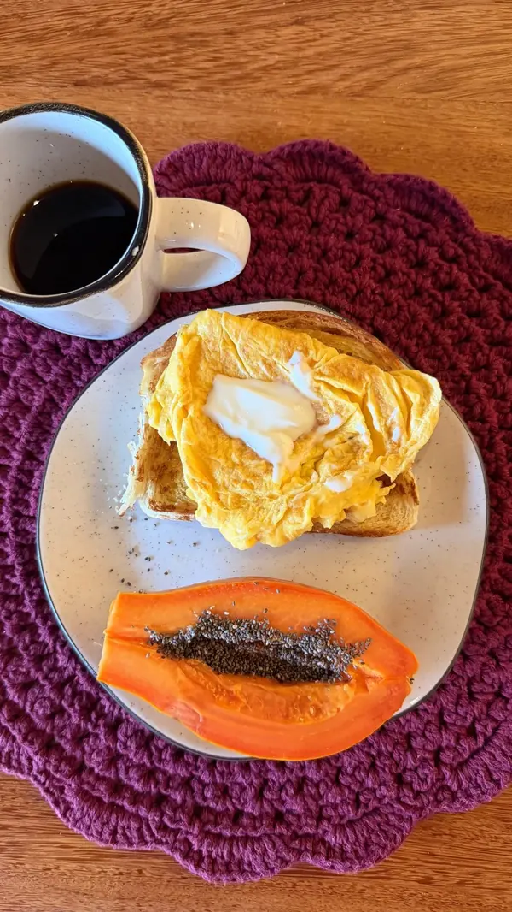
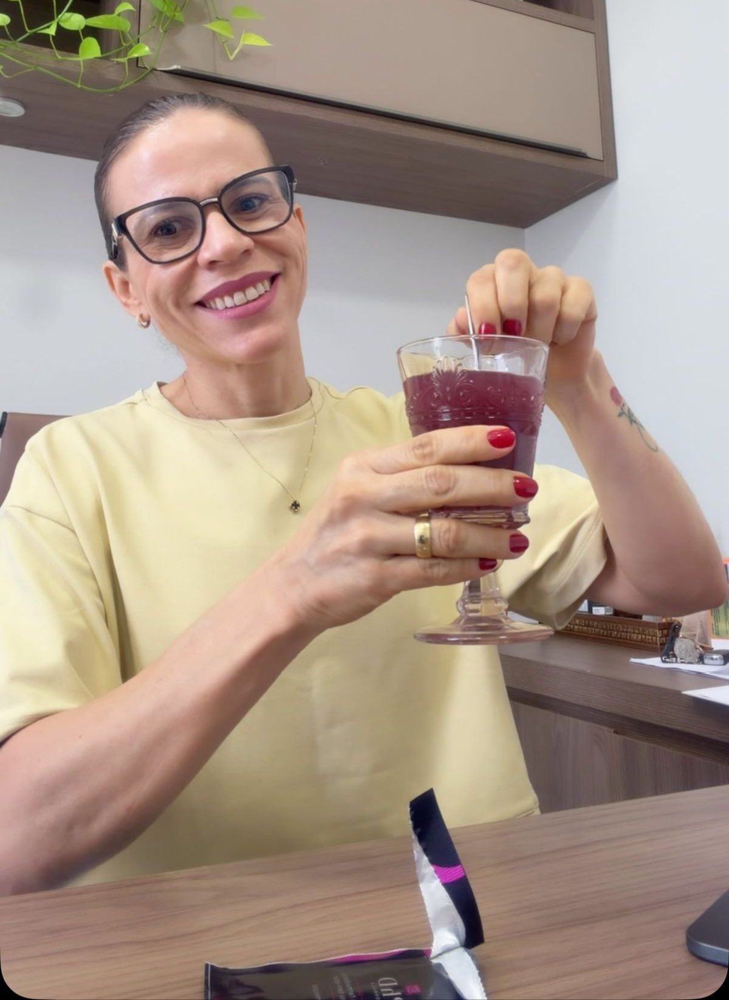

Sueli Ribeiro · nutricionista clínica em Rondônia
Nutricionista clínica em Rondônia. Comida de verdade, cuidado de perto: emagrecimento, diabetes, tireoide, intestino, fígado e intolerâncias.
Mexa o mouse por aqui ✦

Cada plano começa pela sua história, pelos seus exames e pela rotina que você tem de verdade. Sem dieta da moda e sem culpa: comida de verdade, ciência e acompanhamento de perto.
Onde eu posso te ajudar
Seis frentes de cuidado clínico, sempre ajustadas aos seus exames e à sua rotina.

Prazer, Sueli.
Nutricionista clínica, com atendimento individual e um jeito simples, gostoso e possível de olhar para a comida.
No consultório, o plano é construído com você: o que você gosta de comer, o que cabe no seu bolso e na sua semana. No Instagram, ela mostra isso na prática, com pratos coloridos, receitas possíveis e informação com base científica.
- RegistroCRN7/RO 17285
- AtuaçãoNutrição clínica
- RegiãoRondônia
- Instagram@nutri.sueliribeiro

Do primeiro “oi” ao cuidado contínuo
-
01
Você manda uma mensagem
Conta o que está buscando, tira as dúvidas e escolhe o melhor dia para a consulta.
 Sueli RibeiroNutricionistaOlá, Sueli! Vim pelo site e gostaria de agendar uma consulta.
Sueli RibeiroNutricionistaOlá, Sueli! Vim pelo site e gostaria de agendar uma consulta. -
02
Avaliação inicial
Conversa detalhada sobre saúde, rotina, histórico e exames, com bioimpedância quando indicada.

-
03
Plano feito para você
Alimentos que cabem no seu gosto, no seu bolso e na sua semana, com materiais como a lista de compras.

-
04
Acompanhamento e ajustes
Retornos para acompanhar a evolução, responder dúvidas e ajustar o plano com base no que funciona.


Prático, gostoso, de verdade
Informação simples, escolhas melhores
Conteúdo educativo. Não substitui consulta.
Quem já fez o acompanhamento
Antes da primeira consulta
Não encontrou o que procurava? Mande uma mensagem.
Agendar consultaAgende sua consulta
Mande uma mensagem contando o que você procura. A Sueli responde com os próximos horários e tudo o que você precisa saber para a primeira consulta.
- RegistroCRN7/RO 17285
- RegiãoRondônia